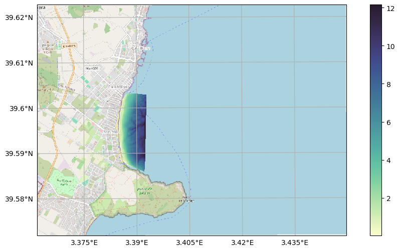
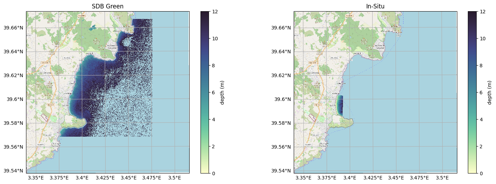

Satellite Derived Bathymetry - Stumpf Method#
This example uses stumpf method to derive bathymetry as mentioned in this article https://doi.org/10.4319/lo.2003.48.1_part_2.0547
Imports#
[1]:
import matplotlib.pyplot as plt
import geopandas as gpd
import numpy as np
import cmocean
from sensingpy import reader, plot
from sensingpy.bathymetry.models import stumpf_pseudomodel, LinearModel
from sensingpy.bathymetry.metrics import ValidationSummary
from sensingpy.bathymetry.plot import CalibrationPlot, ValidationPlot
from sensingpy.masks import is_valid
from sensingpy.preprocessing.outliers import IQR
from sensingpy.enums import SENTINEL2_BANDS
[2]:
import warnings
warnings.filterwarnings("ignore")
Load Satellite Image#
[3]:
satellite = reader.open(r"D:\marine_observatory\raw\Sentinel-2\31SED\S2A_MSI_2018_09_05_10_50_03_T31SED_L2W.nc")
satellite.rename_by_enum(SENTINEL2_BANDS)
satellite.rename({'Rrs_B2' : 'Blue', 'Rrs_B3' : 'Green', 'Rrs_B4' : 'Red'})
satellite.drop_bands( set(satellite.band_names).difference(['Blue', 'Green', 'Red']) )
[3]:
<xarray.Dataset> Size: 1GB
Dimensions: (x: 10980, y: 10980)
Coordinates:
transverse_mercator float64 8B ...
* x (x) float64 88kB 5e+05 5e+05 ... 6.098e+05 6.098e+05
* y (y) float64 88kB 4.4e+06 4.4e+06 ... 4.29e+06 4.29e+06
Data variables:
Blue (y, x) float32 482MB ...
Green (y, x) float32 482MB ...
Red (y, x) float32 482MB ...
Attributes: (12/391)
generated_by: ACOLITE
generated_on: 2025-04-25 11:23:00 Hora de ve...
contact: Quinten Vanhellemont
product_type: NetCDF
metadata_profile: beam
metadata_version: 0.5
... ...
ac_nbands_fit: 2
ac_band1_idx: 0
ac_band1: 1
ac_band2_idx: 5
ac_band2: 6
grid_mapping: transverse_mercator[4]:
balears = gpd.read_file(r"D:\repos\geopy_usage\areas\baleares\baleares.shp").to_crs(satellite.crs).geometry
satellite.clip(balears)
[4]:
<xarray.Dataset> Size: 12MB
Dimensions: (x: 913, y: 1096)
Coordinates:
transverse_mercator float64 8B ...
* x (x) float64 7kB 5.317e+05 5.318e+05 ... 5.409e+05
* y (y) float64 9kB 4.391e+06 4.391e+06 ... 4.38e+06
Data variables:
Blue (y, x) float32 4MB ...
Green (y, x) float32 4MB ...
Red (y, x) float32 4MB ...
Attributes: (12/391)
generated_by: ACOLITE
generated_on: 2025-04-25 11:23:00 Hora de ve...
contact: Quinten Vanhellemont
product_type: NetCDF
metadata_profile: beam
metadata_version: 0.5
... ...
ac_nbands_fit: 2
ac_band1_idx: 0
ac_band1: 1
ac_band2_idx: 5
ac_band2: 6
grid_mapping: transverse_mercatorPseudomodel Green#
[5]:
P_SDB_GREEN = 'pSDB Green'
satellite.add_band(P_SDB_GREEN, IQR( stumpf_pseudomodel(satellite.select('Blue'), satellite.select('Green')), distance = 3 ))
fig, ax = plot.get_geofigure(satellite.crs, 1, 1)
plot.add_basemap(ax, 3.372645, 39.565, 3.4717, 39.665, satellite.crs)
ax, mappable = plot.plot_band(satellite, P_SDB_GREEN, ax = ax, cmap = cmocean.cm.deep)
fig.colorbar(mappable, )
plot.add_gridlines(ax)
[5]:
(<GeoAxes: >, <cartopy.mpl.gridliner.Gridliner at 0x258c6b67b10>)

Load In-Situ Depths#
[6]:
DEPTH = 'Depth'
in_situ = reader.open(r"D:\CallaMillor.tif")
in_situ.rename({'Band 1' : DEPTH})
in_situ.mask(in_situ.select(DEPTH) < 0) ## Positive values are land so they are masked
in_situ.add_band(DEPTH, abs(in_situ.select(DEPTH)) ) ## For model calibration we need depths as positive values
in_situ.dropna()
fig, ax = plot.get_geofigure(in_situ.crs, 1, 1)
plot.add_basemap(ax, 3.372645, 39.579722, 3.436343, 39.60927, in_situ.crs)
ax, mappable = plot.plot_band(in_situ, DEPTH, ax = ax, cmap = cmocean.cm.deep)
fig.colorbar(mappable)
plot.add_gridlines(ax)
[6]:
(<GeoAxes: >, <cartopy.mpl.gridliner.Gridliner at 0x258c7e29350>)

Align In-Situ with Satellite dimensions#
[7]:
in_situ.align(satellite)
in_situ.dropna()
satellite.clip([in_situ.bbox])
[7]:
<xarray.Dataset> Size: 207kB
Dimensions: (x: 67, y: 191)
Coordinates:
transverse_mercator float64 8B ...
* x (x) float64 536B 5.331e+05 5.331e+05 ... 5.337e+05
* y (y) float64 2kB 4.384e+06 4.384e+06 ... 4.382e+06
Data variables:
Blue (y, x) float32 51kB nan nan nan ... 0.0187 0.01813
Green (y, x) float32 51kB nan nan nan ... 0.01661 0.01669
Red (y, x) float32 51kB ...
pSDB Green (y, x) float32 51kB nan nan nan ... 1.026 1.03 1.021
Attributes: (12/391)
generated_by: ACOLITE
generated_on: 2025-04-25 11:23:00 Hora de ve...
contact: Quinten Vanhellemont
product_type: NetCDF
metadata_profile: beam
metadata_version: 0.5
... ...
ac_nbands_fit: 2
ac_band1_idx: 0
ac_band1: 1
ac_band2_idx: 5
ac_band2: 6
grid_mapping: transverse_mercatorIn-situ and Pseudomodel#
[8]:
fig, axs = plot.get_geofigure(satellite.crs, 1, 2)
plot.add_basemap(axs[0], 3.372645, 39.579722, 3.436343, 39.60927, satellite.crs)
plot.plot_band(satellite, P_SDB_GREEN, axs[0], cmap = cmocean.cm.deep)
plot.add_basemap(axs[1], 3.372645, 39.579722, 3.436343, 39.60927, in_situ.crs)
_, mappable = plot.plot_band(in_situ, DEPTH, ax = axs[1], cmap = cmocean.cm.deep)
axs[0].set_title('pSDB Green')
axs[1].set_title('In-Situ Depth')
plot.add_gridlines(axs[0])
plot.add_gridlines(axs[1])
[8]:
(<GeoAxes: title={'center': 'In-Situ Depth'}>,
<cartopy.mpl.gridliner.Gridliner at 0x258c7f22190>)

Calibration#
Select random depths#
arginterval_choice returns a list of indexes. the band is transformed to 1D internaly, so we must transform our bands to 1D when masking.
[9]:
selection = in_situ.arginterval_choice(band = DEPTH, size = 3, intervals = range(5, 10))
Extract depths and pseudomodel as 1D-arrays#
[10]:
depths = in_situ.select(DEPTH).ravel()
p_green = satellite.select(P_SDB_GREEN).ravel()
Fit model#
[11]:
to_cal_depths = depths[selection]
to_cal_p_greens = p_green[selection]
no_nans = is_valid(to_cal_depths) & is_valid(to_cal_p_greens)
calibration = LinearModel().fit(to_cal_p_greens[no_nans], to_cal_depths[no_nans])
print(f'N: {len(to_cal_depths[no_nans])}, Calibration: {calibration}')
N: 12, Calibration: R: 0.8227 | y = 72.918x-67.200
Plot model#
[12]:
fig, ax = plt.subplots(1, 1, figsize = (6, 6))
cal_plot = CalibrationPlot(legend_font_size = 15)
cal_plot.add_calibration_scatter(calibration, to_cal_p_greens[no_nans], to_cal_depths[no_nans], ax = ax)
cal_plot.add_labels(ax, title = f'{P_SDB_GREEN} vs {DEPTH}', xlabel = P_SDB_GREEN, ylabel = DEPTH)
cal_plot.add_legend(ax)
[12]:
<Axes: title={'center': 'pSDB Green vs Depth'}, xlabel='pSDB Green', ylabel='Depth'>

SDB Generation#
[13]:
SDB_GREEN = 'SDB Green'
satellite.add_band(SDB_GREEN, calibration.predict(satellite.select(P_SDB_GREEN)))
fig, axs = plot.get_geofigure(satellite.crs, 1, 3, figsize = (18, 6))
for image, band, crs, title, vmin, vmax, ax in zip([satellite, satellite, in_situ], [P_SDB_GREEN, SDB_GREEN, DEPTH],
[satellite.crs, satellite.crs, in_situ.crs], [P_SDB_GREEN, SDB_GREEN, DEPTH],
[None, 0, 0], [None, 12, 12], axs):
plot.add_basemap(ax, 3.39, 39.58, 3.4, 39.61, crs)
ax, mappable = plot.plot_band(image, band, ax, cmap = cmocean.cm.deep, vmin = vmin, vmax = vmax)
fig.colorbar(mappable, shrink = 0.7)
plot.add_gridlines(ax)
ax.set_title(title)
Validation#
Indexes of values to compare#
[14]:
validation_indexes = ~np.isin(np.arange(in_situ.select(DEPTH).size), selection)
validation_indexes
[14]:
array([ True, True, True, ..., True, True, True], shape=(12797,))
Metrics#
[15]:
depths = in_situ.select(DEPTH).ravel()[validation_indexes]
green = satellite.select(SDB_GREEN).ravel()[validation_indexes]
no_nans = is_valid(depths) & is_valid(green)
validation = ValidationSummary(in_situ = depths[no_nans], model = green[no_nans])
validation
[15]:
N: 8797 | MSD: -0.3999 | MedAE: 0.7271 | Abs_std: 0.73188
Plot#
[16]:
fig, axs = plt.subplots(1, 2, figsize = (12, 6))
val_plot = ValidationPlot(legend_font_size = 10)
val_plot.add_densed_scatter(validation, axs[0])
val_plot.add_residuals(validation, axs[1], metrics = ['MedAE', 'Abs_std'])
plt.subplots_adjust(wspace = 0.3)

Bathymetry#
[17]:
satellite = reader.open(r"D:\marine_observatory\raw\Sentinel-2\31SED\S2A_MSI_2018_09_05_10_50_03_T31SED_L2W.nc")
satellite.rename_by_enum(SENTINEL2_BANDS)
satellite.rename({'Rrs_B2' : 'Blue', 'Rrs_B3' : 'Green', 'Rrs_B4' : 'Red'})
satellite.drop_bands( set(satellite.band_names).difference(['Blue', 'Green', 'Red']) )
satellite.clip(balears)
satellite.add_band(P_SDB_GREEN, IQR( stumpf_pseudomodel(satellite.select('Blue'), satellite.select('Green')), distance = 3 ))
satellite.add_band(SDB_GREEN, calibration.predict(satellite.select(P_SDB_GREEN)))
satellite.mask(satellite.select(SDB_GREEN) < 12) ## Satellite doens't see more than 12m in this study area so we keep values up-to 12m.
fig, axs = plot.get_geofigure(satellite.crs, 1, 2, figsize = (18, 6))
plot.add_basemap(axs[0], 3.372645, 39.565, 3.4717, 39.665, satellite.crs)
axs[0], mappable = plot.plot_band(satellite, SDB_GREEN, axs[0], cmap = cmocean.cm.deep, vmin = 0, vmax = 12)
fig.colorbar(mappable, label = 'depth (m)')
plot.add_gridlines(axs[0])
axs[0].set_title(SDB_GREEN)
plot.add_basemap(axs[1], 3.372645, 39.565, 3.4717, 39.665, in_situ.crs)
axs[1], mappable = plot.plot_band(in_situ, DEPTH, axs[1], cmap = cmocean.cm.deep, vmin = 0, vmax = 12)
fig.colorbar(mappable, label = 'depth (m)')
plot.add_gridlines(axs[1])
axs[1].set_title('In-Situ')
[17]:
Text(0.5, 1.0, 'In-Situ')
